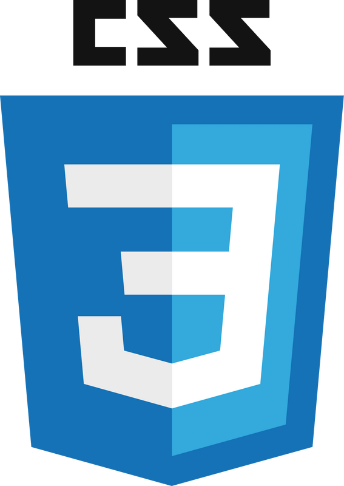

El blog de José Miguel
Bienvenido a mi primer blog, aquí encontraras lo que eh aprendido y lo que quiero aprender sobre la programación web para ser más específicos el área: Frond-end
HTML
HTML, siglas en inglés de HyperText Markup Language (‘lenguaje de marcas de hipertexto’), hace referencia al
lenguaje de marcado para la elaboración de páginas web. Es un estándar que sirve de referencia del software
que conecta con la elaboración de páginas web en sus diferentes versiones, define una estructura básica y un
código (denominado código HTML) para la definición de contenido de una página web, como texto, imágenes,
videos, juegos, entre otros. Es un estándar a cargo del World Wide Web Consortium (W3C) o Consorcio WWW,
organización dedicada a la estandarización de casi todas las tecnologías ligadas a la web, sobre todo en lo
referente a su escritura e interpretación.
HTML se considera el lenguaje web más importante siendo
su invención crucial en la aparición, desarrollo y expansión de la World Wide Web (WWW). Es el estándar que
se ha impuesto en la visualización de páginas web y es el que todos los navegadores actuales han adoptado.
CSS
CSS (siglas en inglés de Cascading Style Sheets), en español «Hojas de estilo en cascada», es un lenguaje de
diseño gráfico para definir y crear la presentación de un documento estructurado escrito en un lenguaje de
marcado.
Es muy usado para establecer el diseño visual de los documentos web, e interfaces de usuario
escritas en HTML o XHTML; el lenguaje puede ser aplicado a cualquier documento XML, incluyendo XHTML, SVG,
XUL, RSS, etcétera. Te puede ayudar a crear tu propio sitio web. Junto con HTML y JavaScript, CSS es una
tecnología usada por muchos sitios web para crear páginas visualmente atractivas, interfaces de usuario para
aplicaciones web y GUIs para muchas aplicaciones móviles (como Firefox OS)
Javascript
JavaScript (abreviado comúnmente JS) es un lenguaje de programación interpretado, dialecto del estándar
ECMAScript. Se define como orientado a objetos,2 basado en prototipos, imperativo, débilmente tipado y
dinámico.
Se utiliza principalmente del lado del cliente, implementado como parte de un navegador web permitiendo
mejoras en la interfaz de usuario y páginas web dinámicas3 y JavaScript del lado del servidor (Server-side
JavaScript o SSJS). Su uso en aplicaciones externas a la web, por ejemplo, en documentos PDF, aplicaciones
de escritorio (mayoritariamente widgets) es también significativo.